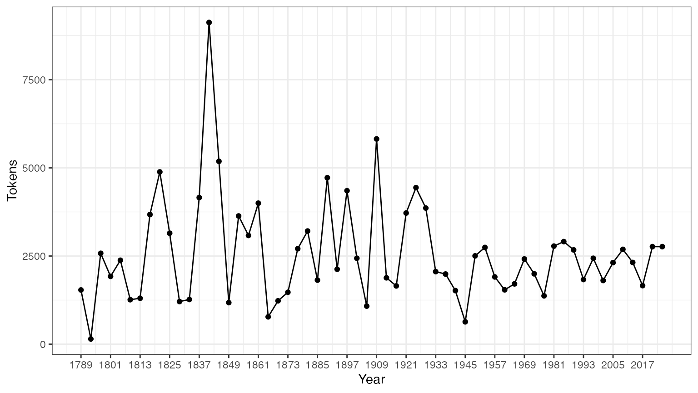
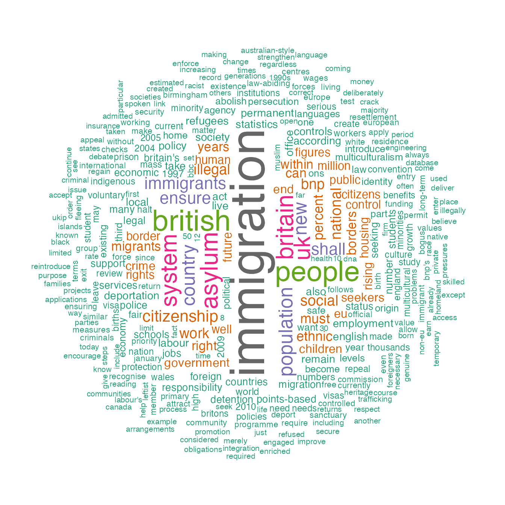

Instalando el paquete
Desde que quanteda está disponible en CRAN, lo puedes instalar usando tu instalador de paquetes en R GUI’s o ejecutar las siguientes líneas:
install.packages("quanteda")Ver instrucciones (en inglés) en https://github.com/quanteda/quanteda para instalar la versión de GitHub.
Paquetes adicionales recomendados:
Los siguientes paquetes funcionan bien con con quanteda o lo complementan y por eso recomendamos que también los instaleis:
readtext: una manera sencilla de leer data de texto casi con cualquier formato con R,.
spacyr: NLP usando la librería spaCy, incluyendo etiquetado part-of-speech, entity recognition y dependency parsing.
-
quanteda.corpora: data textual adicional para uso con quanteda.
devtools::install_github("quanteda/quanteda.corpora") -
LIWCalike: una implementación en R del abordaje de análisis de texto Linguistic Inquiry and Word Count.
devtools::install_github("kbenoit/quanteda.dictionaries")
Creando un corpus
Cargas el paquete para acceder a funciones y data en el paquete.
Fuentes disponibles de corpus
quanteda tiene un simple y poderoso paquete
adicional para cargar textos: readtext.
La función principal en este paquete, readtext(), toma un
archivo o set de archivos de un disco o una dirección de URL y devuelve
un tipo de data.frame que puede ser usado directamente con la función de
construcción de corpus (corpus()) para crear un objeto
corpus en quanteda. readtext() funciona
con:
- archivos de texto (
.txt); - archivos de valores separados por comas (
.csv); - data en formato XML;
- data del API de Facebook API, en formato JSON;
- data de la API de Twitter, en formato JSON; y
- data en formato JSON en general.
El comando constructor de corpus llamado corpus()
funciona directamente sobre:
- un vector de objetos de tipo character, por ejemplo aquellos que ya has cargado al workspace usando otras herramientas;
- un objeto corpus
VCorpusdel paquete tm. - un data.frame que contenga una columna de texto y cualquier otro documento de metadata.
Construyendo un corpus de un vector de tipo character
El caso más simple sería crear un corpus de un vector de textos que ya estén en la memoria en R. De esta manera, el usuario avanzado de R obtiene completa flexibilidad con su elección de textos dado que hay virtualmente infinitas posibilidades de obtener un vector de textos en R.
Si ya se disponen de textos en este formato es posible llamar a la
función de constructor de corpus directamente. Es posible demostrarlo en
el objeto de tipo character integrado de los textos sobre políticas de
inmigración extraídos de los manifiestos de partidos políticos
compitiendo en la elección del Reino Unido en 2010 (llamado
data_char_ukimmig2010).
## Corpus consisting of 9 documents, showing 9 documents:
##
## Text Types Tokens Sentences
## BNP 1125 3280 88
## Coalition 142 260 4
## Conservative 251 499 15
## Greens 322 677 21
## Labour 298 680 29
## LibDem 251 483 14
## PC 77 114 5
## SNP 88 134 4
## UKIP 346 722 26Si quisiéramos, también podríamos incorporar también a este corpus algunas variables a nivel documento – lo que quanteda llama docvars.
Esto lo hacemos utilizando la función de R llamada
names() para obtener los nombres del vector de tipo
character de data_char_ukimmig2010 y asignárselos a una
variable de documento (docvar).
docvars(corp_uk, "Party") <- names(data_char_ukimmig2010)
docvars(corp_uk, "Year") <- 2010
summary(corp_uk)## Corpus consisting of 9 documents, showing 9 documents:
##
## Text Types Tokens Sentences Party Year
## BNP 1125 3280 88 BNP 2010
## Coalition 142 260 4 Coalition 2010
## Conservative 251 499 15 Conservative 2010
## Greens 322 677 21 Greens 2010
## Labour 298 680 29 Labour 2010
## LibDem 251 483 14 LibDem 2010
## PC 77 114 5 PC 2010
## SNP 88 134 4 SNP 2010
## UKIP 346 722 26 UKIP 2010Cargando archivos usando el paquete readtext
require(readtext)
# Twitter json
dat_json <- readtext("~/Dropbox/QUANTESS/social media/zombies/tweets.json")
corp_twitter <- corpus(dat_json)
summary(corp_twitter, 5)
# generic json - needs a textfield specifier
dat_sotu <- readtext("~/Dropbox/QUANTESS/Manuscripts/collocations/Corpora/sotu/sotu.json",
textfield = "text")
summary(corpus(dat_sotu), 5)
# text file
dat_txtone <- readtext("~/Dropbox/QUANTESS/corpora/project_gutenberg/pg2701.txt", cache = FALSE)
summary(corpus(dat_txtone), 5)
# multiple text files
dat_txtmultiple1 <- readtext("~/Dropbox/QUANTESS/corpora/inaugural/*.txt", cache = FALSE)
summary(corpus(dat_txtmultiple1), 5)
# multiple text files with docvars from filenames
dat_txtmultiple2 <- readtext("~/Dropbox/QUANTESS/corpora/inaugural/*.txt",
docvarsfrom = "filenames", sep = "-",
docvarnames = c("Year", "President"))
summary(corpus(dat_txtmultiple2), 5)
# XML data
dat_xml <- readtext("~/Dropbox/QUANTESS/quanteda_working_files/xmlData/plant_catalog.xml",
textfield = "COMMON")
summary(corpus(dat_xml), 5)
# csv file
write.csv(data.frame(inaug_speech = texts(data_corpus_inaugural),
docvars(data_corpus_inaugural)),
file = "/tmp/inaug_texts.csv", row.names = FALSE)
dat_csv <- readtext("/tmp/inaug_texts.csv", textfield = "inaug_speech")
summary(corpus(dat_csv), 5)Cómo funciona un corpus de quanteda
Principios del Corpus
Un corpus está diseñado para ser una “librería” original de documentos que han sido convertidos a formato plano, texto codificado en UTF-8, y guardado junto con meta-data en a nivel de corpus y a nivel de documento. Tenemos un nombre especial para meta-data a nivel de documento: docvars. Estas son variables o características que describen atributos de cada documento.
Un corpus está diseñado para ser un contenedor de textos más o menos estático en lo que respecta a su procesamiento y análisis. Esto significa que los textos en el corpus no están disenado para ser cambiados internamente a través de (por ejemplo) limpieza o preprocesamiento, como stemming o removiendo la puntuación. Más que nada, los textos pueden ser extraídos del corpus como parte del procesamiento y asignados a objetos nuevos, pero la idea es que los corpus se conserven como una copia de referencia original para que otros análisis, por ejemplo aquellos en que stems y puntuación son necesarios, como analizar un índice, pueden ser realizados sobre el mismo corpus.
Para extraer texto de un corpus, es posible utilizar el extractor
llamado texts().
texts(data_corpus_inaugural)[2]## Warning: 'texts.corpus' is deprecated.
## Use 'as.character' instead.
## See help("Deprecated")## 1793-Washington
## "Fellow citizens, I am again called upon by the voice of my country to execute the functions of its Chief Magistrate. When the occasion proper for it shall arrive, I shall endeavor to express the high sense I entertain of this distinguished honor, and of the confidence which has been reposed in me by the people of united America.\n\nPrevious to the execution of any official act of the President the Constitution requires an oath of office. This oath I am now about to take, and in your presence: That if it shall be found during my administration of the Government I have in any instance violated willingly or knowingly the injunctions thereof, I may (besides incurring constitutional punishment) be subject to the upbraidings of all who are now witnesses of the present solemn ceremony.\n\n "Para obtener la data resumida de textos de un corpus, se puede llamar
al método summary() definido para un corpus.
data(data_corpus_irishbudget2010, package = "quanteda.textmodels")
summary(data_corpus_irishbudget2010)## Corpus consisting of 14 documents, showing 14 documents:
##
## Text Types Tokens Sentences year debate number foren
## Lenihan, Brian (FF) 1953 8641 374 2010 BUDGET 01 Brian
## Bruton, Richard (FG) 1040 4446 217 2010 BUDGET 02 Richard
## Burton, Joan (LAB) 1624 6393 309 2010 BUDGET 03 Joan
## Morgan, Arthur (SF) 1595 7107 344 2010 BUDGET 04 Arthur
## Cowen, Brian (FF) 1629 6599 251 2010 BUDGET 05 Brian
## Kenny, Enda (FG) 1148 4232 155 2010 BUDGET 06 Enda
## ODonnell, Kieran (FG) 678 2297 133 2010 BUDGET 07 Kieran
## Gilmore, Eamon (LAB) 1181 4176 203 2010 BUDGET 08 Eamon
## Higgins, Michael (LAB) 488 1286 44 2010 BUDGET 09 Michael
## Quinn, Ruairi (LAB) 439 1284 59 2010 BUDGET 10 Ruairi
## Gormley, John (Green) 401 1030 49 2010 BUDGET 11 John
## Ryan, Eamon (Green) 510 1643 90 2010 BUDGET 12 Eamon
## Cuffe, Ciaran (Green) 442 1240 45 2010 BUDGET 13 Ciaran
## OCaolain, Caoimhghin (SF) 1188 4043 176 2010 BUDGET 14 Caoimhghin
## name party
## Lenihan FF
## Bruton FG
## Burton LAB
## Morgan SF
## Cowen FF
## Kenny FG
## ODonnell FG
## Gilmore LAB
## Higgins LAB
## Quinn LAB
## Gormley Green
## Ryan Green
## Cuffe Green
## OCaolain SFSe puede guardar el output del comando summary como un data frame y graficar algunos estadísticos descriptivos con esta información:
tokeninfo <- summary(data_corpus_inaugural)
if (require(ggplot2))
ggplot(data = tokeninfo, aes(x = Year, y = Tokens, group = 1)) +
geom_line() +
geom_point() +
scale_x_continuous(labels = c(seq(1789, 2017, 12)), breaks = seq(1789, 2017, 12)) +
theme_bw()## Loading required package: ggplot2
# El discurso inaugural más largo: William Henry Harrison
tokeninfo[which.max(tokeninfo$Tokens), ]## Text Types Tokens Sentences Year President FirstName Party
## 14 1841-Harrison 1898 9123 210 1841 Harrison William Henry WhigHerramientas para manejar objetos de corpus
Juntando dos objetos de corpus
El operador + provee un método simple para concatenar
dos objetos corpus. Si contenían diferentes sets de variables a nivel
documento las unirá de manera que no se pierda nada de información. La
meta-data a nivel corpus también queda concatenada.
corp1 <- corpus(data_corpus_inaugural[1:5])
corp2 <- corpus(data_corpus_inaugural[53:58])
corp3 <- corp1 + corp2
summary(corp3)## Corpus consisting of 11 documents, showing 11 documents:
##
## Text Types Tokens Sentences Year President FirstName
## 1789-Washington 625 1537 23 1789 Washington George
## 1793-Washington 96 147 4 1793 Washington George
## 1797-Adams 826 2577 37 1797 Adams John
## 1801-Jefferson 717 1923 41 1801 Jefferson Thomas
## 1805-Jefferson 804 2380 45 1805 Jefferson Thomas
## 1997-Clinton 773 2436 111 1997 Clinton Bill
## 2001-Bush 621 1806 97 2001 Bush George W.
## 2005-Bush 772 2312 99 2005 Bush George W.
## 2009-Obama 938 2689 110 2009 Obama Barack
## 2013-Obama 814 2317 88 2013 Obama Barack
## 2017-Trump 582 1660 88 2017 Trump Donald J.
## Party
## none
## none
## Federalist
## Democratic-Republican
## Democratic-Republican
## Democratic
## Republican
## Republican
## Democratic
## Democratic
## RepublicanArmando subsets dentro de objetos corpus
Hay un método de la función corpus_subset() definida por
objetos corpus, donde un nuevo corpus puede ser extraído en base a
condiciones lógicas aplicadas a docvars:
summary(corpus_subset(data_corpus_inaugural, Year > 1990))## Corpus consisting of 8 documents, showing 8 documents:
##
## Text Types Tokens Sentences Year President FirstName Party
## 1993-Clinton 642 1833 81 1993 Clinton Bill Democratic
## 1997-Clinton 773 2436 111 1997 Clinton Bill Democratic
## 2001-Bush 621 1806 97 2001 Bush George W. Republican
## 2005-Bush 772 2312 99 2005 Bush George W. Republican
## 2009-Obama 938 2689 110 2009 Obama Barack Democratic
## 2013-Obama 814 2317 88 2013 Obama Barack Democratic
## 2017-Trump 582 1660 88 2017 Trump Donald J. Republican
## 2021-Biden 812 2766 216 2021 Biden Joseph R. Democratic
summary(corpus_subset(data_corpus_inaugural, President == "Adams"))## Corpus consisting of 2 documents, showing 2 documents:
##
## Text Types Tokens Sentences Year President FirstName
## 1797-Adams 826 2577 37 1797 Adams John
## 1825-Adams 1003 3147 74 1825 Adams John Quincy
## Party
## Federalist
## Democratic-RepublicanExplorando textos de corpus
La función kwic (keywords-in-context) realiza una
búsqueda de una palabra y permite visualizar los contextos en los que
aparece:
kwic(data_corpus_inaugural, pattern = "terror")## Warning: 'kwic.corpus()' is deprecated. Use 'tokens()' first.## Keyword-in-context with 8 matches.
## [1797-Adams, 1324] fraud or violence, by | terror |
## [1933-Roosevelt, 111] nameless, unreasoning, unjustified | terror |
## [1941-Roosevelt, 285] seemed frozen by a fatalistic | terror |
## [1961-Kennedy, 850] alter that uncertain balance of | terror |
## [1981-Reagan, 811] freeing all Americans from the | terror |
## [1997-Clinton, 1047] They fuel the fanaticism of | terror |
## [1997-Clinton, 1647] maintain a strong defense against | terror |
## [2009-Obama, 1619] advance their aims by inducing | terror |
##
## , intrigue, or venality
## which paralyzes needed efforts to
## , we proved that this
## that stays the hand of
## of runaway living costs.
## . And they torment the
## and destruction. Our children
## and slaughtering innocents, we
kwic(data_corpus_inaugural, pattern = "terror", valuetype = "regex")## Warning: 'kwic.corpus()' is deprecated. Use 'tokens()' first.## Keyword-in-context with 12 matches.
## [1797-Adams, 1324] fraud or violence, by | terror |
## [1933-Roosevelt, 111] nameless, unreasoning, unjustified | terror |
## [1941-Roosevelt, 285] seemed frozen by a fatalistic | terror |
## [1961-Kennedy, 850] alter that uncertain balance of | terror |
## [1961-Kennedy, 972] of science instead of its | terrors |
## [1981-Reagan, 811] freeing all Americans from the | terror |
## [1981-Reagan, 2186] understood by those who practice | terrorism |
## [1997-Clinton, 1047] They fuel the fanaticism of | terror |
## [1997-Clinton, 1647] maintain a strong defense against | terror |
## [2009-Obama, 1619] advance their aims by inducing | terror |
## [2017-Trump, 1117] civilized world against radical Islamic | terrorism |
## [2021-Biden, 544] , white supremacy, domestic | terrorism |
##
## , intrigue, or venality
## which paralyzes needed efforts to
## , we proved that this
## that stays the hand of
## . Together let us explore
## of runaway living costs.
## and prey upon their neighbors
## . And they torment the
## and destruction. Our children
## and slaughtering innocents, we
## , which we will eradicate
## that we must confront and
kwic(data_corpus_inaugural, pattern = "communist*")## Warning: 'kwic.corpus()' is deprecated. Use 'tokens()' first.## Keyword-in-context with 2 matches.
## [1949-Truman, 832] the actions resulting from the | Communist |
## [1961-Kennedy, 510] required - not because the | Communists |
##
## philosophy are a threat to
## may be doing it,En el summary de arriba, las variables Year (año) y
President (presidente) son variables asociadas a cada
documento. Es posible acceder a dichas variables con la función
‘docvars()’
## Year President FirstName Party
## 1 1789 Washington George none
## 2 1793 Washington George none
## 3 1797 Adams John Federalist
## 4 1801 Jefferson Thomas Democratic-Republican
## 5 1805 Jefferson Thomas Democratic-Republican
## 6 1809 Madison James Democratic-RepublicanMás corpora están disponibles en el repositorio quanteda.corpora.
Extrayendo atributos de un corpus
Para realizar análisis estadísticos tales como document scaling, es necesario extraer una matriz asociando valores de ciertos atributos con cada documento. En quanteda, se utiliza la función ‘dfm’ para producir dicha matriz. ‘dfm’, por sus siglas en inglés document-feature matrix o matriz documento-atributo en castellano, siempre se refiere a los documentos como filas y a los atributos como columnas. Se determinó esta orientación de las dimensiones dado que es estándar en el campo de análisis de datos que las unidades de análisis se computen en las filas y los atributos o variables se computen en las columnas. Se denominan “atributos” en vez de términos porque los atributos son más generales que los términos: pueden ser definidos como términos crudos, términos stemmed, términos de partes de discurso, términos luego de la remoción de las stopwords o una clase de diccionario al que pertenece un término. Los atributos pueden ser enteramente generales, como ngrams o dependencias sintácticas y dejamos esto abierto.
Convirtiendo textos en tokens
Para convertir un texto en tokens de manera simple, quanteda provee
un poderoso comando denominadotokens(). Produce un objeto
intermedio que consiste en una lista de tokens en forma de vectores de
caracteres, donde cada elemento de la lista corresponde con un documento
de input.
El comando tokens() es deliberadamente conservador, es
decir, que no remueve nada del texto excepto que se le especifique
explícitamente que lo haga.
txt <- c(text1 = "This is $10 in 999 different ways,\n up and down; left and right!",
text2 = "@kenbenoit working: on #quanteda 2day\t4ever, http://textasdata.com?page=123.")
tokens(txt)## Tokens consisting of 2 documents.
## text1 :
## [1] "This" "is" "$" "10" "in" "999"
## [7] "different" "ways" "," "up" "and" "down"
## [ ... and 5 more ]
##
## text2 :
## [1] "@kenbenoit" "working"
## [3] ":" "on"
## [5] "#quanteda" "2day"
## [7] "4ever" ","
## [9] "http://textasdata.com?page=123."
tokens(txt, remove_numbers = TRUE, remove_punct = TRUE)## Tokens consisting of 2 documents.
## text1 :
## [1] "This" "is" "$" "in" "different" "ways"
## [7] "up" "and" "down" "left" "and" "right"
##
## text2 :
## [1] "@kenbenoit" "working"
## [3] "on" "#quanteda"
## [5] "2day" "4ever"
## [7] "http://textasdata.com?page=123."
tokens(txt, remove_numbers = FALSE, remove_punct = TRUE)## Tokens consisting of 2 documents.
## text1 :
## [1] "This" "is" "$" "10" "in" "999"
## [7] "different" "ways" "up" "and" "down" "left"
## [ ... and 2 more ]
##
## text2 :
## [1] "@kenbenoit" "working"
## [3] "on" "#quanteda"
## [5] "2day" "4ever"
## [7] "http://textasdata.com?page=123."
tokens(txt, remove_numbers = TRUE, remove_punct = FALSE)## Tokens consisting of 2 documents.
## text1 :
## [1] "This" "is" "$" "in" "different" "ways"
## [7] "," "up" "and" "down" ";" "left"
## [ ... and 3 more ]
##
## text2 :
## [1] "@kenbenoit" "working"
## [3] ":" "on"
## [5] "#quanteda" "2day"
## [7] "4ever" ","
## [9] "http://textasdata.com?page=123."
tokens(txt, remove_numbers = FALSE, remove_punct = FALSE)## Tokens consisting of 2 documents.
## text1 :
## [1] "This" "is" "$" "10" "in" "999"
## [7] "different" "ways" "," "up" "and" "down"
## [ ... and 5 more ]
##
## text2 :
## [1] "@kenbenoit" "working"
## [3] ":" "on"
## [5] "#quanteda" "2day"
## [7] "4ever" ","
## [9] "http://textasdata.com?page=123."
tokens(txt, remove_numbers = FALSE, remove_punct = FALSE, remove_separators = FALSE)## Tokens consisting of 2 documents.
## text1 :
## [1] "This" " " "is" " " "$" "10"
## [7] " " "in" " " "999" " " "different"
## [ ... and 18 more ]
##
## text2 :
## [1] "@kenbenoit" " " "working" ":" " "
## [6] "on" " " "#quanteda" " " "2day"
## [11] "\t" "4ever"
## [ ... and 3 more ]También existe la opción de convertir en token los caracteres:
tokens("Great website: http://textasdata.com?page=123.", what = "character")## Tokens consisting of 1 document.
## text1 :
## [1] "G" "r" "e" "a" "t" "w" "e" "b" "s" "i" "t" "e"
## [ ... and 32 more ]
tokens("Great website: http://textasdata.com?page=123.", what = "character",
remove_separators = FALSE)## Tokens consisting of 1 document.
## text1 :
## [1] "G" "r" "e" "a" "t" " " "w" "e" "b" "s" "i" "t"
## [ ... and 34 more ]y las oraciones:
# sentence level
tokens(c("Kurt Vongeut said; only assholes use semi-colons.",
"Today is Thursday in Canberra: It is yesterday in London.",
"En el caso de que no puedas ir con ellos, ¿quieres ir con nosotros?"),
what = "sentence")## Tokens consisting of 3 documents.
## text1 :
## [1] "Kurt Vongeut said; only assholes use semi-colons."
##
## text2 :
## [1] "Today is Thursday in Canberra: It is yesterday in London."
##
## text3 :
## [1] "En el caso de que no puedas ir con ellos, ¿quieres ir con nosotros?"Construyendo una matriz de documentos y atributos
Convertir los textos en tokens es una opción intermedia y la mayoría
de los usuarios querrán directamente construir la matriz de documentos y
atributos. Para hacer esto existe la función de navaja suiza llamada
dfm(), que realiza la tokenización y tabula los atributos
extraídos dentro de una matriz de documentos por atributos. A diferencia
del enfoque conservador de tokens(), la función
dfm() aplica ciertas opciones por default, como
tolower() – una función separada para transformar textos a
minúsculas – y remueve puntuación. De todos modos, todas las opciones de
tokens() se pueden pasar a dfm().
corp_inaug_post1990 <- corpus_subset(data_corpus_inaugural, Year > 1990)
# make a dfm
dfmat_inaug_post1990 <- tokens(corp_inaug_post1990) %>%
dfm()
dfmat_inaug_post1990[, 1:5]## Document-feature matrix of: 8 documents, 5 features (0.00% sparse) and 4 docvars.
## features
## docs my fellow citizens , today
## 1993-Clinton 7 5 2 139 10
## 1997-Clinton 6 7 7 131 5
## 2001-Bush 3 1 9 110 2
## 2005-Bush 2 3 6 120 3
## 2009-Obama 2 1 1 130 6
## 2013-Obama 3 3 6 99 4
## [ reached max_ndoc ... 2 more documents ]Otras opciones para incluyen remover las stopwords y realizar stemming de los tokens.
# make a dfm, removing stopwords and applying stemming
dfmat_inaug_post1990 <- dfm(dfmat_inaug_post1990,
remove = stopwords("english"),
stem = TRUE, remove_punct = TRUE)## Warning: remove_punct argument is not used.## Warning: 'remove' is deprecated; use dfm_remove() instead## Warning: 'stem' is deprecated; use dfm_wordstem() instead
dfmat_inaug_post1990[, 1:5]## Document-feature matrix of: 8 documents, 5 features (2.50% sparse) and 4 docvars.
## features
## docs fellow citizen , today celebr
## 1993-Clinton 5 2 139 10 4
## 1997-Clinton 7 8 131 6 1
## 2001-Bush 1 10 110 2 0
## 2005-Bush 3 7 120 3 2
## 2009-Obama 1 1 130 6 2
## 2013-Obama 3 8 99 6 1
## [ reached max_ndoc ... 2 more documents ]La opción ‘remove’ provee una lista de tokens a ser ignorados. La
mayoría de los usuarios proveerán una lista de ‘stop words’ predefinidas
para varios idiomas, accediendo a través de la función
stopwords():
## [1] "i" "me" "my" "myself" "we"
## [6] "our" "ours" "ourselves" "you" "your"
## [11] "yours" "yourself" "yourselves" "he" "him"
## [16] "his" "himself" "she" "her" "hers"## [1] "и" "в" "во" "не" "что" "он" "на" "я" "с" "со"## [1] "فى" "في" "كل" "لم" "لن" "له" "من" "هو" "هي" "قوة"Visualizando la matriz de documentos y atributos
El dfm puede ser inspeccionado en el panel de ‘Environment’ en
Rstudio o llamando la función View en R. Llamando la
función plot en un dfm se presentará una nube de palabras
usando el paquete wordcloud
package
## Document-feature matrix of: 9 documents, 1,551 features (83.81% sparse) and 0 docvars.
## features
## docs immigration unparalleled crisis bnp can solve current birth
## BNP 21 1 2 13 1 2 4 4
## Coalition 6 0 0 0 0 0 1 0
## Conservative 3 0 0 0 2 0 0 0
## Greens 8 0 0 0 1 0 0 0
## Labour 13 0 0 0 1 0 0 0
## LibDem 5 0 0 0 2 0 0 0
## features
## docs rates indigenous
## BNP 2 5
## Coalition 0 0
## Conservative 0 0
## Greens 0 0
## Labour 0 0
## LibDem 0 0
## [ reached max_ndoc ... 3 more documents, reached max_nfeat ... 1,541 more features ]Para acceder a la lista de los atributos más frecuentes es posible
utilizar topfeatures():
topfeatures(dfmat_uk, 20) # 20 most frequent words## immigration british people asylum britain uk
## 66 37 35 29 28 27
## system population country new immigrants ensure
## 27 21 20 19 17 17
## shall citizenship social national bnp illegal
## 17 16 14 14 13 13
## work percent
## 13 12Para un objeto dfm se puede graficar una nube de
palabras usando textplot_wordcloud(). Esta función pasa
argumentos a wordcloud() del paquete
wordcloud y puede embellecer el gráfico usando los
mismos argumentos:
set.seed(100)
library("quanteda.textplots")
textplot_wordcloud(dfmat_uk, min_freq = 6, random_order = FALSE,
rotation = .25,
colors = RColorBrewer::brewer.pal(8, "Dark2"))
Agrupando documentos por variable
Frecuentemente estamos interesados en analizar cómo textos difieren según factores sustantivos que pueden estar codificados en las variables de documento en vez de simplemente por los límites de los archivos. En esos casos es posible agrupar los documentos que comparten el mismo valor por variable de documento cuando se crea un dfm:
dfmat_ire <- tokens(data_corpus_irishbudget2010, remove_punct = TRUE) %>%
tokens_remove(stopwords("en")) %>%
tokens_group(groups = party) %>%
dfm()We can sort this dfm, and inspect it:
dfm_sort(dfmat_ire)[, 1:10]## Document-feature matrix of: 5 documents, 10 features (0.00% sparse) and 3 docvars.
## features
## docs € people budget government public minister tax economy pay jobs
## FF 113 23 44 47 65 11 60 37 41 41
## FG 55 78 71 61 47 62 11 20 29 17
## Green 13 15 26 19 4 4 11 16 4 15
## LAB 78 69 66 36 32 54 47 37 24 20
## SF 77 81 53 73 31 39 34 50 24 27Agrupando palabras por diccionario o clase de equivalencia
Para algunas aplicaciones se tiene conocimiento previo del conjunto de palabras que son indicativas de rasgos que quisiéramos medir. Por ejemplo, una lista general de palabras positivas puede indicar sentimiento positivo en un reseña de una película tal tenemos un diccionario de términos políticos asociados a una tendencia ideológica en particular. En estos casos, a veces es útil tratar estos grupos de palabras como equivalentes para los propósitos del análisis y sumar las veces en que se utiliza agregándolas por clase.
Por ejemplo, observemos cómo palabras asociadas al terrorismo y palabras asociadas con la economía varían por presidente en el corpus de discursos inaugurales de presidentes de Estados Unidos. Del corpus original seleccionamos los presidentes desde Clinton:
corp_inaug_post1991 <- corpus_subset(data_corpus_inaugural, Year > 1991)Ahora definimos un diccionario de muestra:
dict <- dictionary(list(terror = c("terrorism", "terrorists", "threat"),
economy = c("jobs", "business", "grow", "work")))Se puede usar el diccionario cuando creamos el dfm:
dfmat_inaug_post1991_dict <- dfm(corp_inaug_post1991, dictionary = dict)## Warning: 'dfm.corpus()' is deprecated. Use 'tokens()' first.## Warning: 'dictionary' and 'thesaurus' are deprecated; use dfm_lookup() instead
dfmat_inaug_post1991_dict## Document-feature matrix of: 8 documents, 2 features (12.50% sparse) and 4 docvars.
## features
## docs terror economy
## 1993-Clinton 0 8
## 1997-Clinton 1 8
## 2001-Bush 0 4
## 2005-Bush 1 6
## 2009-Obama 1 10
## 2013-Obama 1 6
## [ reached max_ndoc ... 2 more documents ]El constructor de la función dictionary() también
funciona con el formato de dos diccionarios externos comunes: los
formatos LIWC y Provalis Research’s Wordstat. Por ejemplo, es posible
cargar el LIWC y aplicarlo al corpus de discursos inaugurales de
presidentes:
dictliwc <- dictionary(file = "~/Dropbox/QUANTESS/dictionaries/LIWC/LIWC2001_English.dic",
format = "LIWC")
dfmat_inaug_subset <- dfm(data_corpus_inaugural[52:58], dictionary = dictliwc)
dfmat_inaug_subset[, 1:10]Más ejemplos
Similitudes entre textos
dfmat_inaug_post1980 <- dfm(corpus_subset(data_corpus_inaugural, Year > 1980),
remove = stopwords("english"), stem = TRUE, remove_punct = TRUE)## Warning: 'dfm.corpus()' is deprecated. Use 'tokens()' first.## Warning: '...' should not be used for tokens() arguments; use 'tokens()' first.## Warning: 'remove' is deprecated; use dfm_remove() instead## Warning: 'stem' is deprecated; use dfm_wordstem() instead
library("quanteda.textstats")
tstat_obama <- textstat_simil(dfmat_inaug_post1980,
dfmat_inaug_post1980[c("2009-Obama", "2013-Obama"), ],
margin = "documents", method = "cosine")
tstat_obama## textstat_simil object; method = "cosine"
## 2009-Obama 2013-Obama
## 1981-Reagan 0.623 0.638
## 1985-Reagan 0.643 0.663
## 1989-Bush 0.625 0.578
## 1993-Clinton 0.628 0.627
## 1997-Clinton 0.659 0.647
## 2001-Bush 0.602 0.619
## 2005-Bush 0.527 0.587
## 2009-Obama 1.000 0.682
## 2013-Obama 0.682 1.000
## 2017-Trump 0.519 0.516
## 2021-Biden 0.662 0.645
# dotchart(as.list(tstat_obama)$"2009-Obama", xlab = "Cosine similarity")Se puede utilizar estas distancias para graficar un dendrograma, armando clusters por presidente:
data_corpus_sotu <- readRDS(url("https://quanteda.org/data/data_corpus_sotu.rds"))
dfmat_sotu <- dfm(corpus_subset(data_corpus_sotu, Date > as.Date("1980-01-01")),
stem = TRUE, remove_punct = TRUE,
remove = stopwords("english"))## Warning: 'dfm.corpus()' is deprecated. Use 'tokens()' first.## Warning: '...' should not be used for tokens() arguments; use 'tokens()' first.## Warning: 'remove' is deprecated; use dfm_remove() instead## Warning: 'stem' is deprecated; use dfm_wordstem() instead
dfmat_sotu <- dfm_trim(dfmat_sotu, min_termfreq = 5, min_docfreq = 3)
# hierarchical clustering - get distances on normalized dfm
tstat_dist <- textstat_dist(dfm_weight(dfmat_sotu, scheme = "prop"))
# hiarchical clustering the distance object
pres_cluster <- hclust(as.dist(tstat_dist))
# label with document names
pres_cluster$labels <- docnames(dfmat_sotu)
# plot as a dendrogram
plot(pres_cluster, xlab = "", sub = "",
main = "Euclidean Distance on Normalized Token Frequency")También se puede observar similitudes de los términos:
tstat_sim <- textstat_simil(dfmat_sotu, dfmat_sotu[, c("fair", "health", "terror")],
method = "cosine", margin = "features")
lapply(as.list(tstat_sim), head, 10)## $fair
## time better far us strategi lower long one
## 0.8266617 0.8135324 0.8036487 0.8003029 0.8002557 0.7995066 0.7977770 0.7949795
## practic american
## 0.7944127 0.7892432
##
## $health
## system issu privat need expand support reform hous
## 0.9232094 0.9229859 0.9175231 0.9143293 0.9118901 0.9072374 0.9057456 0.9054303
## dramat mani
## 0.9051588 0.9045851
##
## $terror
## terrorist coalit cheney evil homeland 11th sudden regim
## 0.8539894 0.8179609 0.8175618 0.7949619 0.7878223 0.7603221 0.7556575 0.7533021
## septemb tyranni
## 0.7502925 0.7383253Escalamiento de posiciones de documentos
Aquí realizamos una demostración de escalamiento de documentos unsupervised comparado con el modelo “wordfish”:
library("quanteda.textmodels")
dfmat_ire <- dfm(data_corpus_irishbudget2010)## Warning: 'dfm.corpus()' is deprecated. Use 'tokens()' first.
tmod_wf <- textmodel_wordfish(dfmat_ire, dir = c(2, 1))
# plot the Wordfish estimates by party
textplot_scale1d(tmod_wf, groups = docvars(dfmat_ire, "party"))
Topic models
quanteda hace muy sencillo ajustar topic models también. Por ejemplo:
dfmat_ire2 <- dfm(data_corpus_irishbudget2010,
remove_punct = TRUE, remove_numbers = TRUE, remove = stopwords("english"))## Warning: 'dfm.corpus()' is deprecated. Use 'tokens()' first.## Warning: '...' should not be used for tokens() arguments; use 'tokens()' first.## Warning: 'remove' is deprecated; use dfm_remove() instead
dfmat_ire2 <- dfm_trim(dfmat_ire2, min_termfreq = 4, max_docfreq = 10)
dfmat_ire2## Document-feature matrix of: 14 documents, 1,263 features (64.52% sparse) and 6 docvars.
## features
## docs supplementary april said period severe today report
## Lenihan, Brian (FF) 7 1 1 2 3 9 6
## Bruton, Richard (FG) 0 1 0 0 0 6 5
## Burton, Joan (LAB) 0 0 4 2 0 13 1
## Morgan, Arthur (SF) 1 3 0 3 0 4 0
## Cowen, Brian (FF) 0 0 0 4 1 3 2
## Kenny, Enda (FG) 1 4 4 1 0 2 0
## features
## docs difficulties months road
## Lenihan, Brian (FF) 6 11 2
## Bruton, Richard (FG) 0 0 1
## Burton, Joan (LAB) 1 3 1
## Morgan, Arthur (SF) 1 4 2
## Cowen, Brian (FF) 1 3 2
## Kenny, Enda (FG) 0 2 5
## [ reached max_ndoc ... 8 more documents, reached max_nfeat ... 1,253 more features ]
set.seed(100)
if (require(topicmodels)) {
my_lda_fit20 <- LDA(convert(dfmat_ire2, to = "topicmodels"), k = 20)
get_terms(my_lda_fit20, 5)
}## Loading required package: topicmodels## Topic 1 Topic 2 Topic 3 Topic 4 Topic 5 Topic 6
## [1,] "system" "care" "equal" "million" "fianna" "levy"
## [2,] "high" "allowance" "society" "support" "fáil" "million"
## [3,] "rate" "child" "enterprising" "welfare" "national" "carbon"
## [4,] "recovery" "hit" "nation" "investment" "irish" "change"
## [5,] "much" "fianna" "sense" "back" "support" "welfare"
## Topic 7 Topic 8 Topic 9 Topic 10 Topic 11 Topic 12
## [1,] "kind" "alternative" "confront" "taoiseach" "taoiseach" "child"
## [2,] "imagination" "citizenship" "strategy" "fine" "employees" "benefit"
## [3,] "policies" "wealth" "bring" "gael" "rate" "day"
## [4,] "wit" "adjustment" "problems" "may" "referred" "today"
## [5,] "create" "breaks" "brought" "irish" "debate" "bank"
## Topic 13 Topic 14 Topic 15 Topic 16 Topic 17 Topic 18
## [1,] "recovery" "number" "welfare" "failed" "per" "help"
## [2,] "welfare" "policies" "system" "vision" "families" "reduce"
## [3,] "system" "taoiseach" "fáil" "system" "million" "million"
## [4,] "position" "going" "fianna" "ministers" "irish" "level"
## [5,] "recent" "provision" "taxation" "needed" "welfare" "investment"
## Topic 19 Topic 20
## [1,] "scheme" "spending"
## [2,] "measures" "measures"
## [3,] "million" "reduction"
## [4,] "investment" "review"
## [5,] "recent" "welfare"